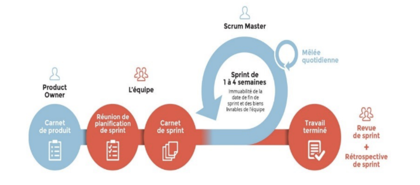
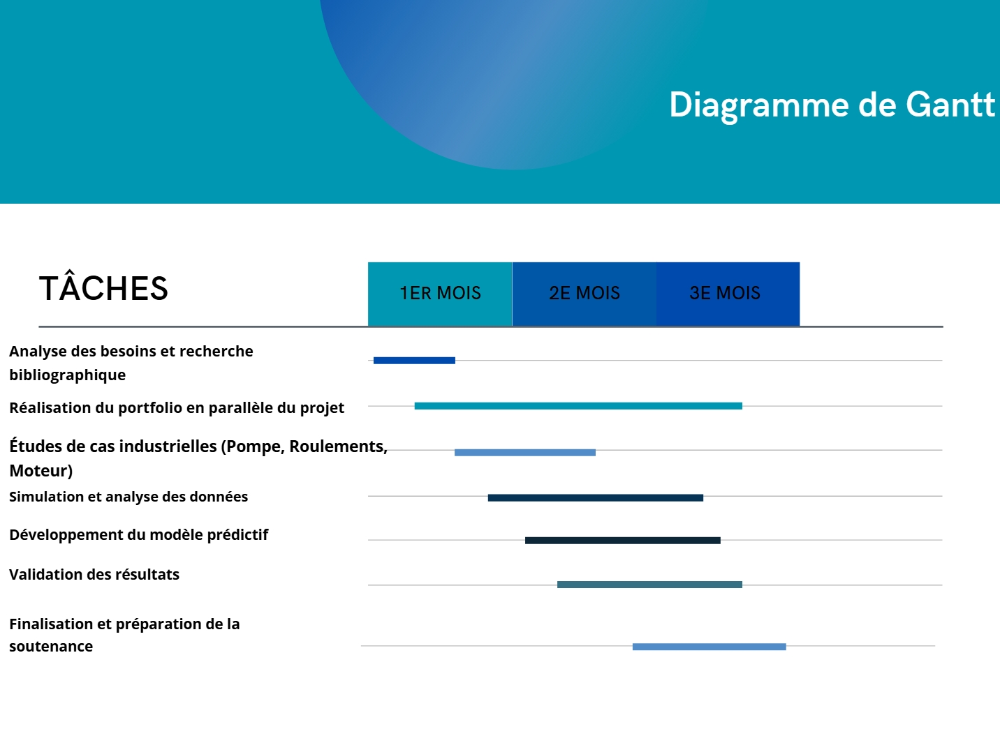

Pour ce projet, nous avons adopté une approche hybride combinant la méthodologie Agile (Scrum) et le cycle en V. Cette combinaison permet de bénéficier de la flexibilité de Scrum pour les itérations rapides et de la rigueur du cycle en V pour la validation à chaque étape clé.
Scrum est une méthode agile basée sur des itérations courtes appelées sprints. Chaque sprint permet de livrer une partie du travail, favorisant la collaboration, la communication et l’adaptabilité.
Le cycle en V est une méthode linéaire et structurée qui assure la vérification à chaque étape. Il se compose de trois phases principales :
Après avoir structuré le projet, nous avons utilisé un diagramme de Gantt pour planifier visuellement les tâches, identifier les chevauchements et gérer les priorités, assurant ainsi une organisation fluide et un suivi efficace.
